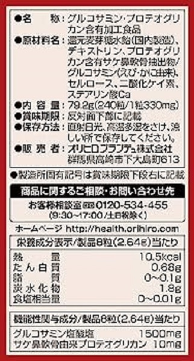
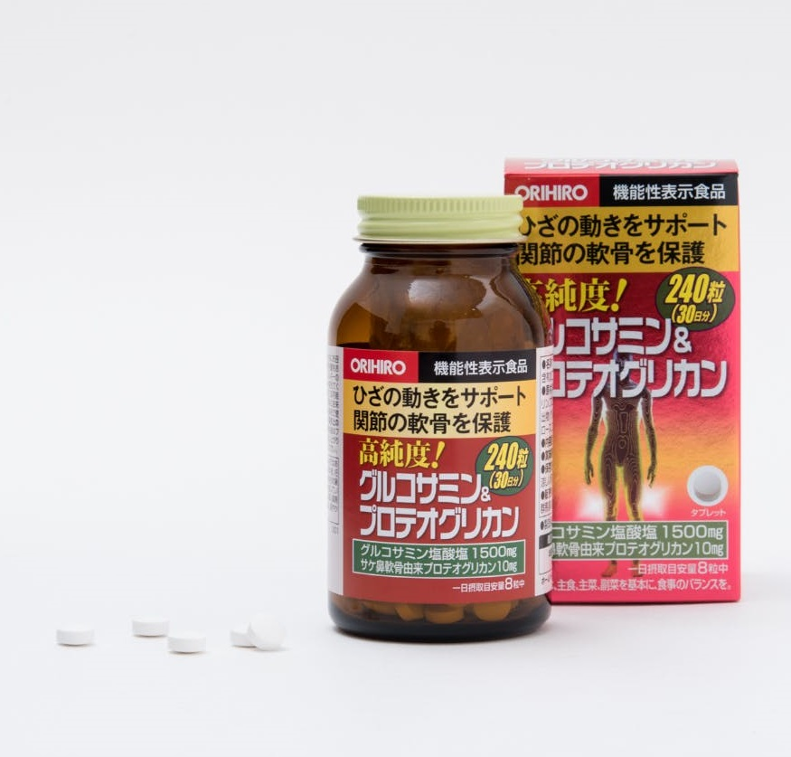
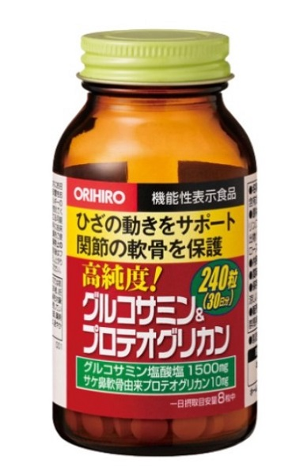

<!DOCTYPE html>
<html lang="vi" translate="no>
    <head>
        <meta charset="UTF-8" />
        <meta http-equiv="X-UA-Compatible" content="IE=edge" />
        <meta name="viewport" content="width=device-width, initial-scale=1.0" />
        <title>Dandelion</title>

        <!-- Favicon -->
        <link rel="apple-touch-icon" sizes="57x57" href="../wwwroot/favicon/apple-icon-57x57.png">
        <link rel="apple-touch-icon" sizes="60x60" href="../wwwroot/favicon/apple-icon-60x60.png">
        <link rel="apple-touch-icon" sizes="72x72" href="../wwwroot/favicon/apple-icon-72x72.png">
        <link rel="apple-touch-icon" sizes="76x76" href="../wwwroot/favicon/apple-icon-76x76.png">
        <link rel="apple-touch-icon" sizes="114x114" href="../wwwroot/favicon/apple-icon-114x114.png">
        <link rel="apple-touch-icon" sizes="120x120" href="../wwwroot/favicon/apple-icon-120x120.png">
        <link rel="apple-touch-icon" sizes="144x144" href="../wwwroot/favicon/apple-icon-144x144.png">
        <link rel="apple-touch-icon" sizes="152x152" href="../wwwroot/favicon/apple-icon-152x152.png">
        <link rel="apple-touch-icon" sizes="180x180" href="../wwwroot/favicon/apple-icon-180x180.png">
        <link rel="icon" type="image/png" sizes="192x192" href="../wwwroot/favicon/android-icon-192x192.png">
        <link rel="icon" type="image/png" sizes="32x32" href="../wwwroot/favicon/favicon-32x32.png">
        <link rel="icon" type="image/png" sizes="96x96" href="../wwwroot/favicon/favicon-96x96.png">
        <link rel="icon" type="image/png" sizes="16x16" href="../wwwroot/favicon/favicon-16x16.png">
        <link rel="manifest" href="../wwwroot/favicon/manifest.json">
        <meta name="msapplication-TileColor" content="#ffffff">
        <meta name="msapplication-TileImage" content="../wwwroot/favicon/ms-icon-144x144.png">
        <meta name="theme-color" content="#ffffff">

        <!-- Font -->
        <link rel="stylesheet" href="../wwwroot/fonts/stylesheet.css" />

        <!-- Reset CSS -->
        <link rel="stylesheet" href="../wwwroot/css/reset.css" />

        <!-- Styles -->
        <link rel="stylesheet" href="../wwwroot/css/common.css" />
        <link rel="stylesheet" href="../wwwroot/css/layout.css" />
        <link rel="stylesheet" href="../wwwroot/css/product.css">

        <!-- Responsive -->
        <link rel="stylesheet" href="../wwwroot/css/responsive.css">

    </head>
    <body>
        <!-- Header -->
        <div id="header-container"></div>
        
        <!-- Main -->
        <main class="products-main">
            <div class="container">
                <!-- Main Content -->
                <div class="main-content">

                    <!-- Information -->
                    <div class="product-information">
                        <div class="product-gallery">
                            <!-- The expanding image container -->
                            <div class="picture-container">
                                <!-- Close the image -->
                                <span onclick="this.parentElement.style.display='none'" class="closebtn">&times;</span>
                            
                                <!-- Expanded image -->
                                
                            
                                <!-- Image text -->
                                <div id="imgtext"></div>
                            </div>
                            <div class="picture-row">
                                <div class="column">
                                    
                                </div>
                                <div class="column">
                                    
                                </div>
                                <div class="column">
                                    
                                </div>
                                <div class="column">
                                    
                                </div>
                            </div>
                        </div>

                        <div class="product-detail">
                            <h3 class="product-name">Viên uống bổ xương khớp Orihiro Glucosamine vỏ đỏ (240 viên)</h3>
                            <table class="tbl-detail" style="width: 100%;">
                                <tr>
                                    <th>Nhóm:</th>
                                    <td>
                                        <a href="/danh-muc/tpcn-bo-tro-xuong-khop" class="product-group pr-gr-mb">
                                        <span class="product-class" style="text-decoration: underline;">TPCN Bổ trợ xương khớp</span>
                                        </a>
                                    </td> 
                                    
                                </tr> 
                                <tr>
                                    <th>Giá bán:</th> 
                                    <td>
                                        <strong class="product-price">679,000</strong> / Hộp
                                    </td>
                                </tr> 
                                
                                <tr>
                                    <th>Quy cách:</th> 
                                    <td>Lọ 240 viên</td>
                                </tr>
                                
                                <tr>
                                    <th>Sản xuất:</th> 
                                    <td>Orihiro Nhật Bản</td> 
                                </tr> 
                                
                                <tr class="tr-product">
                                    <th colspan="3">Mô tả:</th>
                                </tr> 

                                <tr>
                                    <td colspan="3">
                                        <div class="product-decs">
                                            <div>
                                                <span class="">Viên uống bổ khớp Glucosamine Proteoglycan Orihiro Nhật Bản là sản phẩm rất tốt cho những người đau nhức khớp gối, 
                                                    khuỷu tay, bả vai, đau cứng cổ,…Sản phẩm rất phù hợp với người cao tuổi bị thoái hóa xương khớp, người bị chấn thương, 
                                                    người sau phẫu thuật, người làm việc nặng nhọc,…
                                                </span> 
                                            </div>
                                        </div>
                                    </td>
                                </tr>
                            </table>
                        </div>
                    </div>
                

                    <!-- Addition Information -->
                    <div class="additional-information">
                        <ul id="nav" class="anchor-link clearfix">
                            <li><a href="#ingredient" target="_self">Thành phần</a></li>
                            <li><a href="#utility">Công dụng・Hiệu quả</a></li>
                            <li><a href="#use">Hướng dẫn sử dụng</a></li>
                            <li><a href="#recommendation">Chú ý</a></li>
                            <li><a href="#preservation">Bảo quản</a></li>
                            <li><a href="#producer">Nhà sản xuất</a></li>
                        </ul>

                        <div class="anchor">
                            <a name="ingredient"></a> 
                            <h3 class="mtit">Thành phần</h3> 
                            <div class="describe-product">
                                <ul>
                                    <li>
                                        Sirop maltose men tiền giảm tổng hợp (sản xuất trong nước), dextrin, chiết xuất sụn mũi cá hồi chứa proteoglycan / glucosamine (nguồn gốc từ tôm và cua), cellulose, silic dioxide, canxi stearat.
                                    </li>
                                </ul>

                            </div>
                        </div>

                        <div class="anchor">
                            <a name="utility"></a>
                            <h3 class="mtit">Công dụng・Hiệu quả</h3>
                            <div class="describe-product"><p style="text-align:justify">
                                <ul>
                                    <li>Viên uống Glucosamine Proteoglycan Orihiro giúp khớp gối hoạt động dẻo dai và linh hoạt hơn.</li>
                                    <li>Giúp thúc đẩy quá trình trẻ hóa khớp, giảm thời gian lão hóa của sụn, giảm đau đơn cho người đang mắc bệnh xương khớp, kích thích tiết chất nhờn trong khớp.</li>
                                    <li>Hỗ trợ phần sụn khớp được tái tạo, phòng ngừa lão hóa, phân hủy phần sụn khớp.</li>
                                    <li>giúp Hạn chế tình trạng đau nhức khớp gối, đi lại khó khăn, đau nhức khớp ở người cao tuổi.</li>
                                    <li>Hỗ trợ quá trình phục hồi nhanh chóng của người bệnh sau chấn thương.</li>
                                </ul>
                            </div>
                        </div>

                        <div class="anchor">
                            <a name="use"></a>
                            <h3 class="mtit">Hướng dẫn sử dụng</h3>
                            <div class="describe-product">
                                <ul>
                                    <li>Uống mỗi ngày 8 viên với nước ấm.</li>
                                    <li>Chia thành 2 lần sử dụng trong ngày, uống sau bữa ăn khoảng 30p.</li>
                                    <li>Hãy tuân theo lượng khuyến nghị hàng ngày.</li>
                                    <li>Vui lòng tham khảo thành phần và không sử dụng sản phẩm này nếu bạn bị dị ứng với động vật có vỏ hoặc dị ứng thực phẩm khác.</li>
                                    <li>Độ ẩm, v.v... có thể làm hạt bị biến màu hoặc nứt.</li>
                                    <li>Hương vị độc đáo (đắng, chua, v.v.) đến từ nguyên liệu thô và không ảnh hưởng đến chất lượng.</li>
                                    <li>Nếu bạn đang sử dụng thuốc chống huyết khối, vui lòng tham khảo ý kiến bác sĩ hoặc dược sĩ.</li>
                                </ul>
                            </div>
                        </div>

                        <div class="anchor">
                            <a name="recommendation"></a>
                            <h3 class="mtit">Chú ý khi sử dụng</h3>
                            <div class="describe-product">
                                <ul>
                                    <li>Sản phẩm này không nhằm mục đích chẩn đoán, điều trị hoặc ngăn ngừa bệnh tật.</li>
                                    <li>Sản phẩm này không phải là thực phẩm được phát triển dành cho người mắc bệnh, trẻ vị thành niên, phụ nữ mang thai (kể cả những người dự định mang thai) hoặc phụ nữ đang cho con bú.</li>
                                    <li>Nếu bạn có bệnh, vui lòng tham khảo ý kiến bác sĩ. Nếu bạn đang dùng thuốc, vui lòng tham khảo ý kiến bác sĩ hoặc dược sĩ.</li>
                                    <li>Nếu bạn cảm thấy bất kỳ thay đổi nào về tình trạng thể chất của mình, hãy ngừng dùng thuốc ngay lập tức và tham khảo ý kiến bác sĩ.</li>
                                </ul>
                            </div>
                        </div>

                        <div class="anchor">
                            <a name="preservation"></a>
                            <h3 class="mtit">Bảo quản</h3>
                            <div class="describe-product">
                                <ul>
                                    <li>Vui lòng điền ngày mở hộp trước khi sử dụng.</li>
                                    <li>Sau khi mở, đậy chặt nắp, bảo quản vào hộp bên ngoài và tiêu thụ càng sớm càng tốt.</li>
                                    <li>Để xa tầm tay trẻ em.</li>
                                    <li>Để nơi khô thoáng. Tránh ánh sáng trực tiếp.</li>
                                </ul>
                            </div>
                        </div>

                        <div class="anchor">
                            <a name="producer"></a>
                            <h3 class="mtit">Nhà sản xuất</h3> 
                            <div class="describe-product">
                                <ul>
                                    <li>Orihiro</li>
                                </ul>
                            </div>
                        </div>

                        <div>
                            <br>
                            <i>
                                <b>*Lưu ý: Mọi thông tin chỉ mang tính chất tham khảo. Việc sử dụng thuốc và chữa bệnh phải tuân theo hướng dẫn của bác sĩ và người có chuyên môn!</b>
                            </i>
                        </div>

                        <br>
                        <div>
                            <p>Đọc thêm : <a target="_blank" href="https://www.vinmec.com/vi/thong-tin-duoc/su-dung-thuoc-toan/glucosamine-cong-dung-lieu-dung-va-tac-dung-phu/">Glucosamine là gì? Công dụng và liều dùng (Vinmec)</a></p>
                        </div>
                        
                            
                    </div>
                </div>
            </div>
        </main>

        <!-- Footer -->
        <div id="footer-container"></div>

        <!-- Javascript -->
        <script src="../wwwroot/js/layout.js"></script>
        <script src="../wwwroot/js/header.js"></script>
        <script src="../wwwroot/js/product.js"></script>

    </body>
</html>
